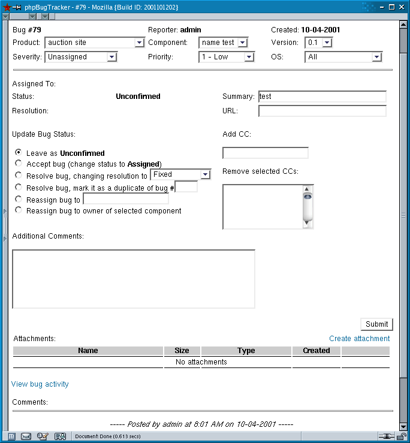

The majority of the time you spend with phpBugTracker will probably be on the bug detail page. This page shows you all the information about a bug, and allows you to change most of it.

Editing a bug.
When changes are made to a bug, an email is sent to the person who reported it and to the person to whom the bug is assigned. However, email is not sent to the person who is making the changes to the bug. So, if a bug has been submitted and assigned to a developer, and then the developer adds comments to the bug, then those comments will be emailed to the reporter but not to the developer. Additional people can be added to receive these change emails by adding them to the CC list. To remove people from the CC list, simply select the people to be removed and submit the form.
The set of radio buttons beneath the Update Bug Status label changes depending on the status of the bug. The bug in the screen shot is one that has been newly submitted, so it is unassigned at the moment. If a developer looking at this bug wanted to take ownership, she would click Accept bug and then submit the form. If a bug is resolved as a duplicate of another bug (e.g, bug #77), it will be closed and a comment will be added to this bug and to bug #77 noting that this bug is a duplicate of that one. If there is a developer assigned to be the owner of this component (in this case, "name test"), then the bug can be assigned to that individual by clicking the last radio button.
Files can be added to a bug as attachments by clicking on the Create Attachment link. This will bring up another form where you can supply a short description and browse for the file to be uploaded. Attachments can be viewed (and can be deleted by administrators) from the attachment list.
Adding comments to a bug allows you to provide more detail about what caused the bug or what the expected behavior was, but also allow the developer and the user to communicate about a bug while keeping a history of those notes. Comments that are added to a bug will be emailed as described previously. HTML tags will be stripped from the comments, but there are two special character sequences that can be used to create links when the comments are displayed:
bug #nn : Causes a link to be created to the numbered bug in phpBugTracker.
cvs:path/filename.ext[:v.vv] : Creates a link to a view of the specified source file in the CVS web interface specified in the configuration. The CVS version number is optional, so the format would be cvs:path/filename.ext if the version isn't specified.